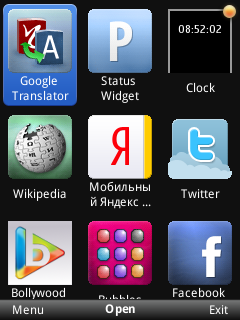
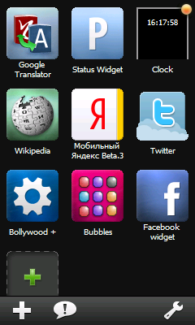
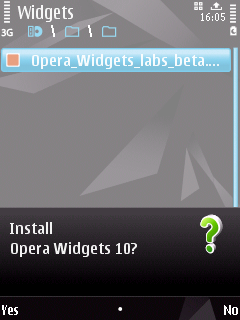
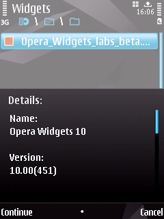
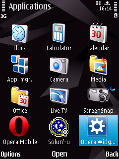

The Opera Widgets Manager application
Table of contents:
Introduction
The Opera Widget manager is a standalone application allowing you to organize and run widgets independently of the browser. The manager integrates with Opera’s distribution channel for widgets – widgets.opera.com – and responds to files with a .wgt extension.
 
Figure 1: The Opera Widget manager application on different platforms
The Widget manager application for Windows Mobile and a developer version of the application for the S60 platform are both included in the Opera Widgets SDK.
Windows Mobile
The Windows Mobile Widget manager gives you one-click access to your favourite widgets. The Windows Mobile Widget manager is available as an add-on download to the Opera Mobile browser for Windows Mobile. These can both be downloaded from ftp://ftp.opera.com/pub/opera/winmobile/970b1/
The Windows Mobile Widget manager includes the following widgets by default: Twitter, Mystatus, Google Translate, Geoquiz and Bubbles. It links to an updated version of the Opera Widgets website, where more widgets can be downloaded.
Note that this manager depends on the browser component already being installed.
Installation instructions
- Either download the Windows Mobile Widget manager package using the browser on your phone, or locate the installation file in the util/manager folder in the SDK package.
- Send it to your phone using ActiveSync.
- Locate the
.cabfile on your device. Double-click it to start the installation. - Run the installation. The Widget manager is now available in your application list.
S60
The Widget manager brings widgets to the S60 platform at the touch of a button. The build does not include the Opera browser component – the build has been made available so that developers can test and build Opera Widgets even before our product hits the market.
The application has been tested on the following handsets:
- Nokia E65
- Nokia E66
- Nokia 6110
- Nokia 6210 Navigator
- Nokia N73
- Nokia N78
- Nokia N82
- Nokia N95
- Nokia N95 8gb
- Nokia N96
- Nokia 6124c
- Samsung i550
Several new features have been added in this update. These include:
- Move widget: Sort your own widget list and put your widgets where you want them
- Send widget: Send your favorite widgets to friends using MMS, Bluetooth or IR (depending on what the phone supports)
- Support for Opera Dragonfly.
Installation instructions
- Either download the S60 Widget manager package using the browser on your phone, or locate the installation file in the util/manager folder in the SDK package.
- Send the file to your device using Bluetooth. This will open a dialogue as seen in Figure 3.
- Run the installation. The Widget manager will now be available in your application grid.
  
Figure 2: Installing on S60
Running widgets on the device
To run widgets on your device, do the following:
- Create the widget and test it in the Widget Emulator.
- Zip the contents of the widget directory and give it a ”.wgt” extension.
- Send it to your device, using Bluetooth, IR or ActiveSync over USB.
- Locate the package on the device and double click the file to view your widget in action.
You can also visit widgets.opera.com using your phone’s browser to download more widgets.
Resources
- Characteristics of widgets on mobile phones
- Cross device development techniques for widgets
- Remote debugging of widgets on mobile devices
This article is licensed under a Creative Commons Attribution-Noncommercial-Share Alike 3.0 Unported license.
Comments
The forum archive of this article is still available on My Opera.
-

hi i download this app on my nokia 603 symbian s60 but the app load to open long time and it not open after the load...
-
hi i need a more detailed explanation on how to use the widget
No new comments accepted.ody
Thursday, June 7, 2012
Daniel lot
Sunday, July 22, 2012